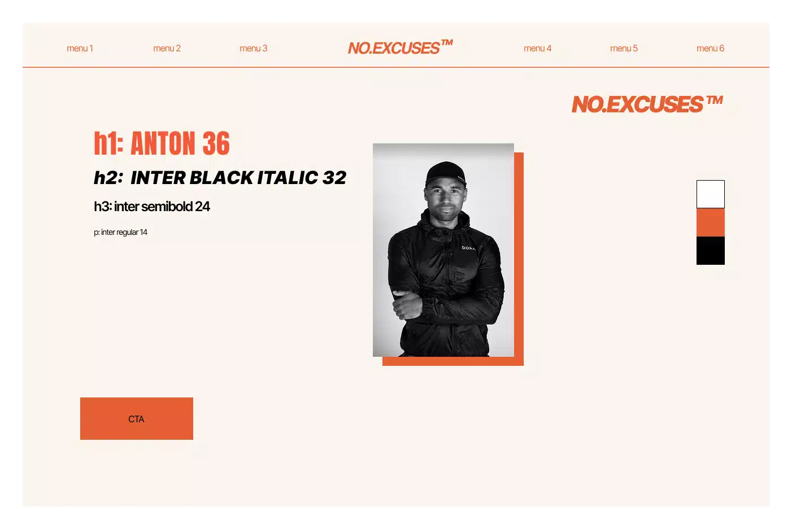

Vi startede ud med at lave en gruppekonktrakt, hvor vi lavede en
forventningsafstemmelse om hvad vi synes gruppearbejde er og
hvordan vi skulle arbejde sammen
Derefter tog Oscar kontakt til en virksomhed som vi gerne ville
arbejde med, No Excuses Co. Hans bror har hans eget firma som
personlig træner og havde snakket om at han ønskede et redesign af
hans hjemmeside
Vi modtog en stilreference, samt en gennemgående farve fra kunden
og gik derefter i gang med at lave et style tile hver, hvoraf vi
så endte med at vælge ét som vi ville bruge

Kunden godkendte vores style tile og vi gik i gang med at lave
wireframes og prototyper. Da de var færdige, lavede vi likert test
på den gamle side og den nye side, for at se om vores redesign
havde den ønskede ændring i udtrykket
Kunden synes at deres tidligere hjemmeside var meget mørk og
maskulin og ønskede et lysere design, som var mere inklusivt for
kvinder. Vores test viste at vores ændringer havde den ønskede
effekt
Derefter lavede vi en 5 sekunders test, for at tjekke om brugeren
fik det ønskede førstehåndsindtryk af siden
Når vi var færdige med at lave vores tests, gik vi i gang med at
kode. Jeg fik ansvaret for at redesigne deres træningsoversigt. Da
vi var flere om et projekt, brugte vi Git til at dele vores kode
mens vi arbejdede